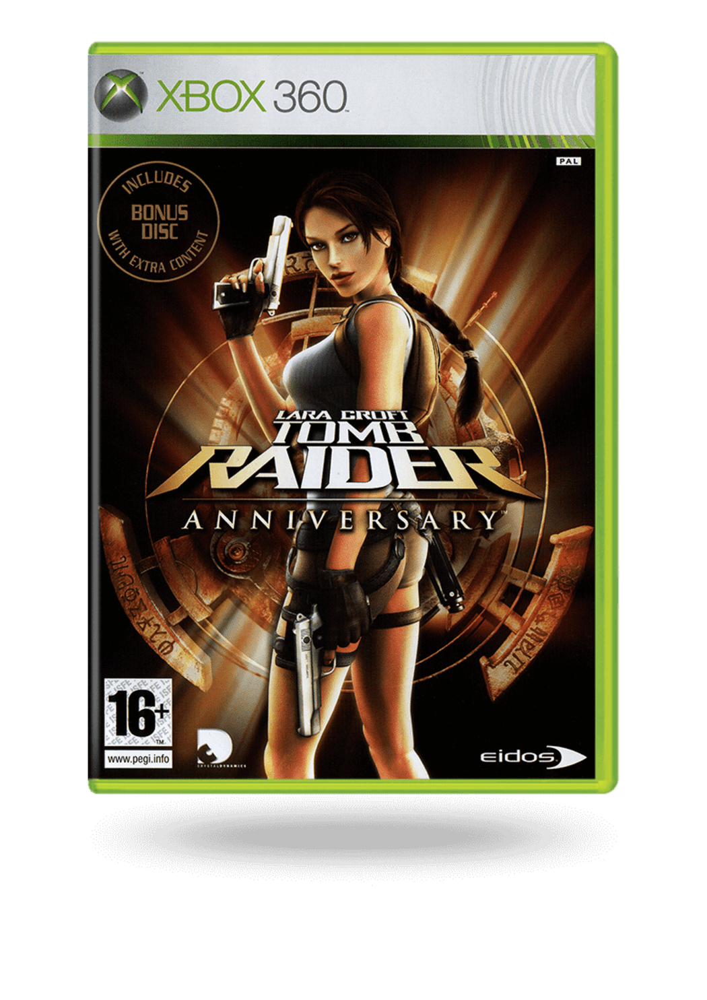
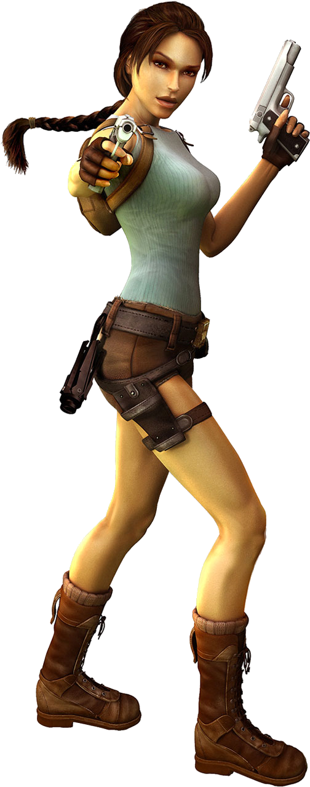
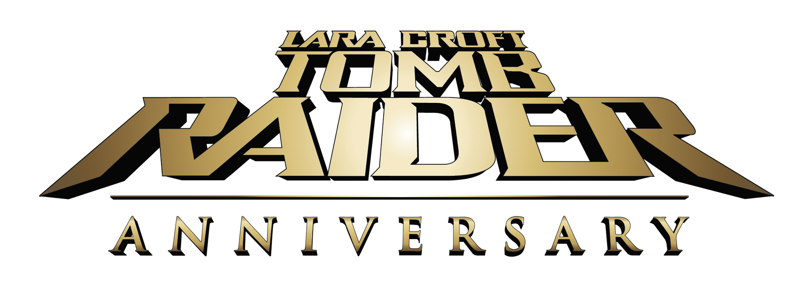

Tomb Raider: Anniversary regresa al instante donde la aventura original de Lara Croft, en su búsqueda del legendario artefacto Scion, definió el género en tercera persona. Usando un mejorado motor de Tomb Raider: Legend, los gráficos, la tecnología y la física llevan la aventura de Lara y la búsqueda de un místico artefacto únicamente conocido como el Scion a los estándares tecnológicos actuales, ofreciendo a los jugadores una experiencia de juego totalmente nueva. Con un diseño completamente reinventado, Anniversary nos entrega a una Lara Croft dinámica, fluida y rápida, masivos entornos con increíbles efectos visuales, combate intenso, ritmo frenético y una historia original realzada y clarificada.
Informacion del juego
- Explora la Atlántida y las antiguas pirámides egipcias: cada hendidura oscura oculta y altura imposible
- Libera un granizo de balas de las pistolas dobles de Lara – Juego de armas acrobático mientras saltas de forma hábil alrededor de enemigos cargando
- La naturaleza espera: los depredadores bestiales de murciélagos a lobos para osos defienden su territorio de la encroacación humana
- Acrobacias que desafían la muerte: salte sobre grandes huecos, se adhiere a las repisas de rocas y nade a través de túneles subterráneos
- Busca superar a los brillantes y antiguos diseñadores de muchos rompecabezas épicos y bóvedas para descubrir sus secretos
¿Queres saber mas sobre Lara croft?
 Lara Croft regresa a los videojuegos con un remake de su primera aventura para PS2, celebrando los diez años de vida de la heroína creada por Eidos. Realizado por los creadores de Tomb Raider: Legend, este aniversario vuelve a contar la historia del original, pero adaptando su jugabilidad a los tiempos que corren. Tendremos que usar las formidables habilidades de Lara para saltar de plataforma en plataforma y acabar con los enemigos, con nuevos elementos jugables como eventos interactivos. También conocido como Tomb Raider 10th Anniversary Edition.